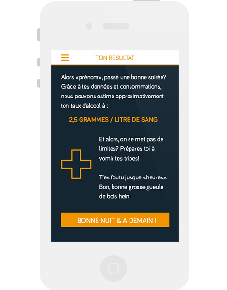

Si vous avez soif de curiosité et que vous aimez faire la fête en buvant un coup, cette application est faite pour vous!
 TéléchargerNe vous est-il jamais arrivé de vous demander "à quel point
suis-je bourré ?". Avec nectar , c'est très simple: vous insérez trois données en quelques secondes, vous ajoutez vos consommations au cours de la soirée, et il vous suffit d'aller voir le résultat!
L'avantage est que l'application est à la fois amusante et préventive, mais jamais restrictive! Vous pouvez consulter votre taux d'alcool si vous voulez contrôler votre état avant de conduire ou prouver aux gens qui vous accusent d'être "trop" saoul, que ce n'est pas le cas.
A l'opposé, vous pouvez vous en servir pour battre vos potes à "celui qui a plus cuvé sans vomir" ou même battre votre propre record. Autrement dit, c'est l'utilisateur lui-même qui choisi son utilité.
Le taux d'alcoolémie se calcule en fonction du sexe de la personne et de son poids, ainsi que des boissons qu'il a ingéré et ce en combien de temps. Nectar a pour but de faciliter la vie de l'utilisateur. Pas de calculs fastidieux ou d'argent dépensé pour souffler dans un alcooltest, il lui suffit de sélectionner ses alcools et l'application fait tout le reste!
Les calculs sont basés sur des quantités générales vendues dans les bars et autres commerces. La plus grande majorité des boissons alcoolisées s'y trouvent et sont regroupées par catégorie (bières, eau-de-vie,…) afin de faciliter la recherche du consommateur.
Des milliers d'autres fonctionnalités restent disponibles et compatibles avec notre projet.Soyons clair, le but premier est de calculer son taux d'alcoolémie mais l'application pourrait aussi:
L'amélioration et l'ajout de fonctionnalités sont sans limites. Ce que l'utilisateur veut c'est une appllication qui est accessible, ludique , et surtout utile.
Moomba 2014 ©